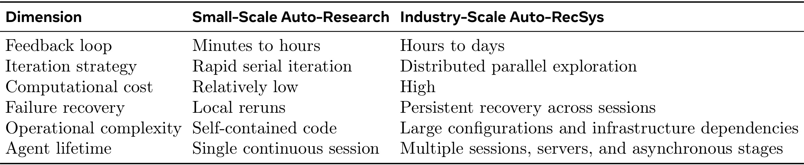
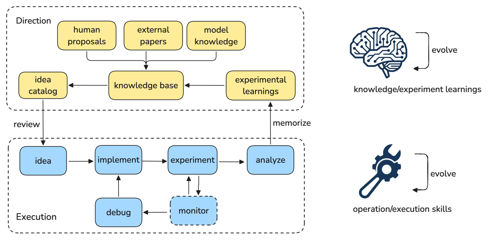
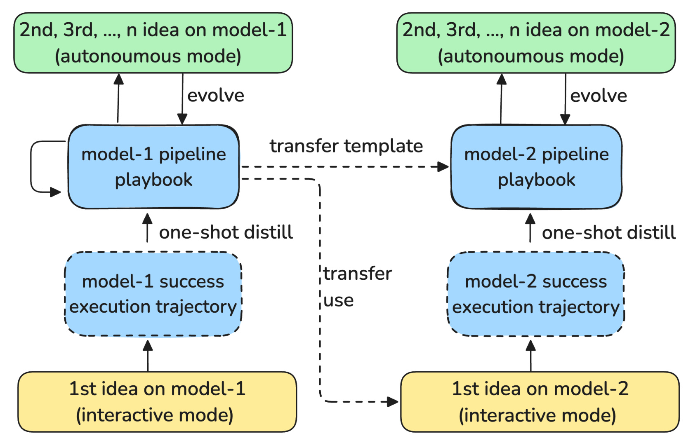
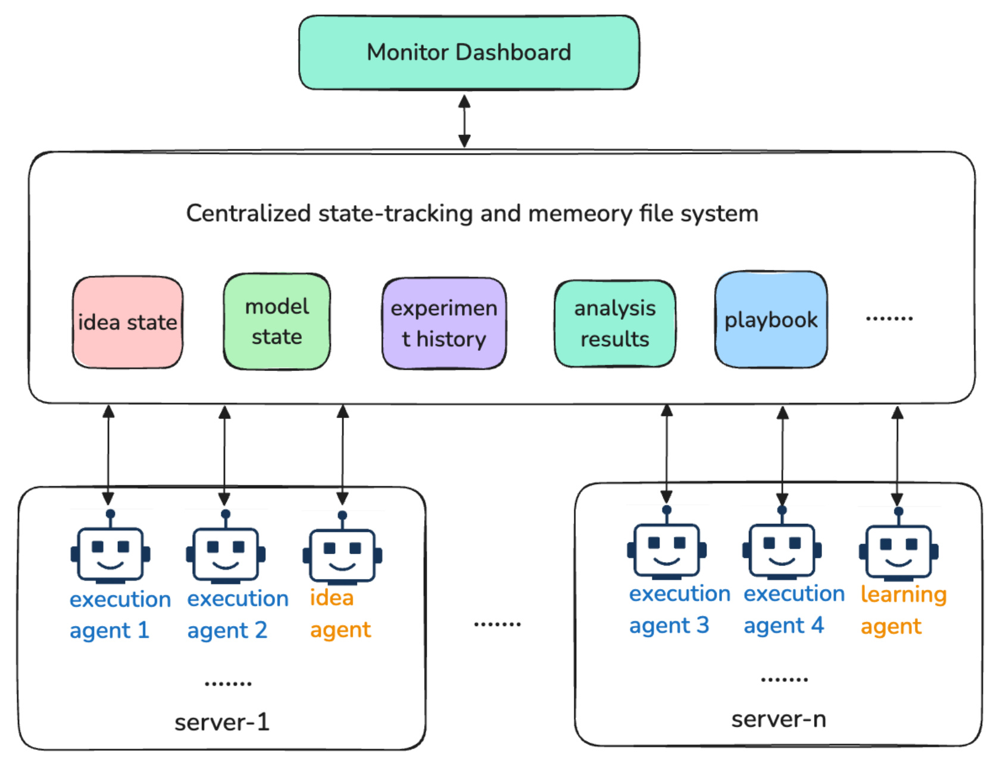
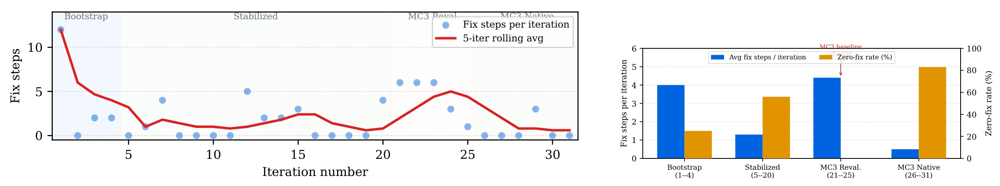

Auto-RecSys：让工业推荐实验跨越多日训练与多次会话
Auto-RecSys: Harnessing Autonomous Research Agents for Industry-Scale Recommender Systems 由 Meta 的 Ming Li 等人提出，合作机构包括伊利诺伊大学厄巴纳香槟分校。arXiv 首版公开于 2026 年 9 月 10 日，PDF 首页另署 9 月 11 日；本笔记依据完整 16 页首版。论文入口：arXiv:2609.10922。截至本轮核验，未找到这项工作的独立官方代码仓库；文中引用的其他自动研究系统和工具不能视为本文开源实现。
这篇论文讨论工业推荐模型的研发流程，重点是怎样让实验状态、操作经验与研究结论跨会话延续。其主要证据来自真实工作流轨迹和运维修复次数，阅读时需要把执行可靠性与推荐模型本身的效果分开。
工业推荐的一次模型训练可能持续数天，串行试验难以维持研究速度；庞大的配置、脆弱的基础设施依赖和长时间 GPU 作业，又要求实验能够在会话中断、服务器切换与失败后恢复。
1. 背景和问题
自动研究系统通常把提出假设、修改代码、运行实验和分析结果连成一个闭环。当一次试验只需几分钟，最直接的策略就是逐个试：读上轮结果，选择下一项修改，重新启动脚本。这样的反馈节奏使同一代理会话可以保留从假设到结果的大部分上下文，失败时也能直接重跑。Auto-RecSys 的出发点是，这套组织方式搬到工业推荐会遇到不同的时间尺度。论文引言把一次完整研究周期描述为三至七天，其中包含实现、验证、训练、恢复和分析；这个范围是作者对工作场景的描述，并不是后文对照实验测得的固定耗时。长训练期间如果代理只能等待一个想法，昂贵计算资源之外，研究者的其他探索机会也会闲置。
工业推荐实验还依赖大量模型之外的知识。一个新特征进入数据后，运行时批对象里的名字可能与数仓列名不同；模型参数可能散布在配置类、编码器和任务头等多个文件；提交作业要匹配包层版本、硬件代际、权限配额和调度标签；热启动还依赖当前有效的检查点。人类研究者往往已经知道这些约束，所以容易把它们当成理所当然的背景。代理首次进入代码库时没有这份经验，它即使正确理解了新特征的建模价值，也可能在根本没开始有效训练之前，连续失败于硬件选择或提交配置。论文因此把操作经验本身视为需要逐轮积累的研究基础设施。
Table 1 将两种环境放在同一组维度下对照，帮助确定系统到底要解决哪些问题。

表中的行依次比较反馈周期、迭代策略、计算成本、失败恢复、操作复杂度和代理存续时间。左列的小尺度研究主要在分钟到小时内得到结果，可采用快速串行实验，恢复通常是本地重跑；右列的工业场景把反馈扩展到小时或天，强调分布式并行探索和跨会话恢复。这里最值得注意的是最后一行：代理的生命周期与训练任务的生命周期已经脱钩。模型作业可能继续运行，而负责启动它的会话已经消失，所以将实验上下文只放在聊天历史里无法支撑整个周期。失败恢复那一行与操作复杂度那一行共同说明，系统既要记住做到哪一步，也要记住为什么以前的步骤会失败。
这是一张问题定义表，不是量化性能结果。表中“高计算成本”没有给出设备数量或金额，“小时到天”也没有提供各模型分布，不能据此计算节省百分比。作者借它推出三类系统要求：多个想法独立推进、上下文和结果持久保存、关键状态变更由可检验程序执行。单纯提高语言模型推理能力，并不能自动获得这些能力；同样，多开几个代理也不能解决多个会话共享一个可变实验状态时的覆盖问题。表格真正服务的论点是，研究代理的外围运行系统要与工业训练的异步性相适配，而不是说明某一种代理模型在所有研究任务中优于其他模型。
推荐研发的另一个特殊困难是基线会变化。团队通常不断整合其他方向的收益，一项旧基线上的正向修改，在更新后的模型上可能变得冗余，甚至产生负收益。如果代理只记住“这个特征以前有效”，它会把一个有条件的观察误当成永恒结论。论文要求同一模型的并行想法共享基线，并对齐训练日期范围，再把结果和结论写回实验历史。研究记忆因此不能只有成功列表，还必须包含在哪个模型状态和比较条件下成功，以及是否已经对新基线重新验证。后文六项旧正向想法在新基线上失败的案例，正好揭示这一层约束。
作者把积累内容区分为“实验如何执行”和“下次实验应该探索什么”。前者包括失败原因、可用命令与提交参数；后者包括假设、效果判断、已尝试方向和下一步线索。这两类内容会相互影响，但对应的有效性标准不同：一次作业成功提交，可以证明某组操作条件在当时可用，却不能证明提出的模型改动有价值；一次效果为负的实验，也可能留下值得长期保存的正确提交配方。若把它们混为一张成功记录表，代理容易既忘记负结果的研究价值，也无法区分研究方向失败与基础设施失败。
这项工作和推荐算法的联系主要在研发组织与实验可信性层面。Auto-RecSys 没有提出新的召回打分器，也没有把大模型放到线上排序路径中。它试图减少研究者在模型试验生命周期里重复处理运维细节的时间，使相同注意力预算可以管理更多方向。其双循环并不要求重新训练底层语言模型，适应主要发生在外部状态和自然语言操作手册中。理解这一点后，后文的可靠性曲线就有了恰当位置：它是系统能否更稳地完成实验的证据，尚不是实验发现了更强推荐模型的直接证明。
在这个目标下，人类监督也需要重新定义。若研究者每隔几分钟手动检查作业，即使代码由代理生成，注意力仍被监控切碎；反之，完全放开所有提交决策，又可能让薄弱想法消耗昂贵训练资源。作者因此提供交互与自主两种模式，并把使用自主模式的适宜条件描述为手册较成熟、候选方向风险较低。这里的核心矛盾是控制粒度和人工带宽之间的取舍，而不是简单追求零人类参与。读者应分别追问，谁批准研究假设、谁确认代码、谁决定启动训练、谁判断结果可信，因为这些决定所需知识和错误代价都不相同。论文后面检查点描述存在差异，也提醒我们评估自动化时必须先把监督配置说清楚，否则即便两次流程都被称为交互模式，人工投入也未必可比。
2. 方法
2.1 分层编排与双循环
Auto-RecSys 的输入是模型上下文、候选研究想法以及已有操作和实验历史；输出包括完成的实验、相对基线的判断与更新后的长期记忆。编排层驱动有限状态机，专门代理负责各阶段，持久化层保存跨服务器共享的内容。单个想法依次经历提出、实现、验证、训练和分析，训练失败时进入调试，分析后再回到下一轮想法。状态机以每个想法为单位保存进度，并在状态转换处执行前置条件检查和副作用。 因此，一个想法训练失败不会通过同一份模型级状态覆盖另一项正在分析的实验。

Figure 1 上半部分的黄色节点表示方向形成过程：人类建议、外部论文和模型知识进入知识库，再形成想法目录；右侧的实验经验把已完成结果重新送回这层知识。下半部分蓝色节点从想法出发，经过实现、实验和分析，在监控发现问题时转入调试，再回到实现。上下两层的连接不是两个完全独立的工作流：想法需要向下交给执行，而分析后的经验需要向上被记住。图右侧的大脑和工具图标进一步强调，两条反馈分别改变研究知识与操作技能，并不表示底层语言模型权重在这里被在线更新。
这张图还说明，执行成功和研究成功必须分开反馈。监控、调试与重新提交产生的轨迹会沉淀到模型手册，帮助下一次少走操作弯路；相对基线的正向、持平或负向结论则影响下一轮想法选择。来自外部论文的技术点不能直接变成训练任务，要先结合当前模型的特征、模块和历史试验判断是否值得做。图中 review 箭头表明系统保留人工审阅接口，实际何时暂停取决于运行模式。这里展示的是信息流及职责分解，没有给出将文献新意、风险或预期收益转换为统一数值评分的算法，所以不能把它描述成已验证的最优实验调度策略。
在实现上，自然语言技能负责解释做什么、为何这样做以及何时求助，确定性脚本负责精确状态转换、文件写入、参数检查与 API 调用。 一个语言模型可以判断某次失败像包版本问题，但不应依靠自由文本直接改写关键状态字段。脚本通过固定数据结构和原子更新减少中途写坏状态的风险。知识也有三层：跨模型共享的编排技能描述通用实验流程；每类模型的手册保存专属配置与经验；单次实验状态保存提交号、作业标识、验证结果等短期信息。本文没有可复用的核心公式：全文以状态机、文件结构、操作流程和文字定义的指标描述系统，没有提出训练损失、数学化状态更新或解码目标，因此本笔记保留真实流程而不补造优化公式。
2.2 执行演化与模型手册
执行循环的核心载体是一对模型级文件：供人和代理阅读的自然语言手册，以及机器可读的迭代元数据。手册收录关键文件与函数、配置标志的命名和插入惯例、验证命令及成功信号、作业提交配方、失败原因与对应修复、已经奏效的执行策略。每轮动作先进入会话轨迹，完成后从轨迹提炼三种内容：错误与修复成对的禁止项、成功流程对应的逐步配方、由试错确定的基础设施参数。这样，下一轮看到的不只是“上次失败过”，还包括错误因何发生以及哪种处理曾经解决它。

Figure 2 从底部的交互式首个想法开始：人类提供模型资料并帮助处理问题，执行轨迹经提炼形成第一个模型的手册，随后更多想法在该手册指导下运行，并继续反馈新经验。横向虚线表示迁移到第二个模型的是手册模板和组织方法；第二个模型仍有自己的交互式首轮、成功轨迹与后续演化。因此标题中的一次迁移，不是把第一个模型的硬件参数、特征路径和所有失败规则直接复制后即可无人值守。论文正文明确，新模型需要在已知模板中填入其专属文件、配置惯例、验证命令和提交配方。
上下箭头让手册呈现一种持续更新关系，而不是一次性文档生成。首模型花多轮探索得到的分类结构可以被复用，减少新模型重新设计知识组织的工作；真正依赖架构的内容仍需核验。图中的自主模式建立在手册成熟之后，但论文没有给出“成熟”的数值阈值或经过校准的置信度判据。因而这张图能解释为什么作者希望跨模型扩展更容易，却不能独立证明迁移需要的人工时间降低了多少，更不能推出所有后续模型都只需一次训练便稳定运行。对实现而言，应把模板复用和事实迁移分开记录，尤其要避免将一个模型暂时不支持的操作写成跨模型永久禁令。
手册中的自愈主要来自错误与补救措施的配对。例如遇到某代 GPU 不稳定后，后续提交会优先选择更稳定的代际；发现包层不兼容后，记住当时可用版本；发现检查点过期后，学会查询当前有效项。这些规则由代理提炼，确实减少了逐条人工编写规则的需要，但它们的适用范围仍受环境变化约束。确定性脚本能约束操作执行，并不自动验证自然语言经验的真实性与长期有效性。 论文讨论部分承认，手册更新目前依据代理判断直接接受，尚无正式验证闸门。把这条限制与自愈机制放在一起看，才能避免将一套经验积累流程误读为已经具有严格正确性保证的学习算法。
2.3 想法演化与持久化恢复
想法循环首先读取模型架构、任务头、特征清单和已启用模块，避免每次会话从几千行配置重新理解模型。候选可由研究者提交，也可来自文献或代理对结构缺口的分析。系统用历史结果去重，并按预期指标影响、实现复杂度、回归风险和相对既有试验的新颖性排序。每项想法应写成可检验假设，明确知识依据与目标文件，随后进入统一执行管线。完成后的正向、持平或负向判断和结构化经验追加到模型历史；后续可组合部分成功方向、停止反复失败的类别或探索未覆盖区域。论文没有给出这些排序维度的明确权重，故其研究决策仍相当程度依赖代理判断。

Figure 3 底部展示多台服务器上的执行代理、想法代理和学习代理，中部共享层保存想法状态、模型状态、实验历史、分析结果与手册，顶部看板从同一状态层汇总当前进展。双向箭头意味着会话既读取已有事实，也把新状态和经验回写；不同服务器不是各自维护一份互不相通的实验记忆。图中多个代理在不同阶段工作，使单次训练虽然仍需数天，系统却能同时推进多个方向。共享层里的想法状态与模型状态并列，也对应了局部隔离和全局背景共同存在的要求：实验进度独立，模型知识和基线仍要协调。
需要谨慎理解作者所谓“不争用”。每个想法独立文件确实减少同一实验状态被不同方向覆盖，但注册表、基线、手册与历史仍是共享对象，论文没有提供完整分布式锁、事务隔离或并发故障测试的细节。图能说明预期的数据路径，不能替代对这些共享写入的实际验证。看板从结构化状态生成，利于统一监督，但状态中的作业标识还必须与远端训练平台核对。该图原本就是嵌入 PDF 的栅格示意图，节点文字服务架构关系而非精密测量；理解时应以正文给出的文件职责和恢复步骤补足，不从图的代理数量推断实验规模或并行加速倍数。
持久化结构按模型和想法分层：活动状态可变，完成状态归档只读，实验历史以逐行可解析的追加日志保存，会话轨迹单独备份。新会话启动后先读全局注册表和目标模型的活动状态，若会话标识改变则读取旧轨迹，对训练中的想法查询远端作业，然后选择下一步操作。跨服务器恢复还需要代码本身可取回，论文案例将未完成改动保存成共享代码评审草稿，再由新会话读取状态中的草稿标识并应用。由此可见，轨迹解释“为什么做到这里”，结构化状态给出“具体产物在哪里”，远端查询确认“现在实际是什么状态”；缺少其中任一环节，都可能把有记忆误当成可恢复。
3. 实验结果
3.1 评估对象与指标边界
作者称系统已经在数个工业推荐模型上测试，但最主要的定量可靠性分析来自一个代表模型的 31 次独立实验迭代。选择它的重要原因是评估期内发生了基线变化，可以观察稳定环境中的经验积累，以及环境改变后的退化与恢复。论文没有公开推荐数据集名称、样本规模、完整模型配置或各轮推荐指标，因此这里不能建立与公开推荐基准直接可比的效果表。它是一份工业工作流观察报告，证据更接近带具体轨迹的系统案例，而不是固定测试集上多方法、多随机种子的标准比较。
“会话日志步”是轨迹中的一次带时间戳动作，包括实现决定、观察、提交、错误处理和分析。“重大修复步”则只计算从操作性失败中恢复的动作，例如重提训练、修正硬件或权限、替换包层、纠正元数据和刷新基线。论文主动排除了实现研究想法时的推理和代码调试，把那部分算作与想法复杂度及底层代理能力有关的有效工作。 因此，修复步下降不等于所有调试工作下降，也不等于模型研发总成本同比例下降。零修复率指没有重大操作恢复的迭代占比，不能解释为代码从未出错、无需任何人工审阅或推荐效果一定正向。
作者还按根因归类错误，例如 GPU 不稳定、调度标签缺失、构建日期参数、输入命名或包层不匹配。这种分类可以解释为何某一类知识写入手册后，相关问题在后续阶段不再出现。但类别由历史轨迹整理，论文没有提供独立标注一致性或盲审结果。同一个复杂失败究竟算几个修复步，会影响指标；后续研究若要比较不同系统，需要固定计数协议，并同时给出包含实现调试的总工作量。当前数据适合观察同一工作流的阶段变化，不能直接拿来给其他代理系统排可靠性名次。
3.2 可靠性如何随基线变化

Figure 4 左侧横轴是 31 次实验的迭代序号，纵轴是每轮重大修复步，散点表示单轮计数，红线表示五轮滑动平均；背景分成初始建立、稳定、基线重评和新基线原生探索四个阶段。右侧按阶段汇总，蓝柱读左轴的平均修复步，橙柱读右轴的零修复百分比。由于两个纵轴单位不同，不能直接比较蓝橙柱高低。原图中间的基线转换箭头提醒读者，曲线的反弹对应环境变化，不应把整个过程压缩成从起点到终点的一条平滑下降线。
按正文的具体数字，初始第 1—4 轮平均为 4.0 次重大修复，第 5—20 轮稳定期降为 1.3 次。第 21 轮基线换成结合图模式编译、新嵌入模块和任务适配器的配置，提交基础设施随之变化；第 21—25 轮连续五项试验都需要操作恢复。吸收这些新经验后，第 26—31 轮平均降至 0.5 次，其中六轮有五轮零重大修复。最后一个比例约为百分之八十三，但样本只有六轮，不能当成系统未来稳定的成功概率。滑动平均也不是置信区间，其相邻点共享最近五轮数据，平滑后的视觉趋势不能增加独立证据数量。
这组结果支持的较窄结论是：在作者这段真实工作流中，手册成熟与运维修复下降相伴，而且基线改变后能够重新积累经验。它不能单独区分手册、代理熟练度、任务难度变化或基础设施自身修复的贡献。稳定期有十六轮，首阶段只有四轮，新基线后期只有六轮，阶段样本量也不平衡。没有去掉手册的同期对照、冻结手册的对照或不同底层模型的对照，就不能把从 4.0 到 0.5 的全部差异归因于某一个机制。图中换基线后的退化反而很有信息量：它显示已有经验具有条件性，新的配置会使以前可靠的配方暂时失效。
错误类别的文字分析补充了曲线。稳定期逐渐吸收硬件、提交参数、构建惯例和输入命名规则；基线转换带来硬件与权限、适配器注入、包层版本和上游修订冲突等问题。作者报告，转换期出现的包层和发布基础设施类别在后续阶段消失；末阶段剩余的是图编译类型推断的新代码问题。这里的“消失”仅指后续已观察轨迹中不再出现，不能推出永远不会复发。若模型架构或基础设施再次变化，旧规则仍可能需要失效处理。论文没有给出完整逐类计数表或公开原始轨迹，独立复核目前受限。
3.3 人工注意力与自主执行案例
人力部分明确指出，端到端墙钟时间由训练、集群排队和基线可用性主导，Auto-RecSys 不会让同一个训练作业自然变快。作者比较的是从提出想法到得到分析结果所需的人类主动参与：人工流程需要数小时到数天，交互式系统据称可降到几分钟，相同注意力可以覆盖十多个想法。这个判断缺少逐任务计时明细、参与人员数量、任务难度匹配和随机对照，适合当作作者经验而非精确可复现的效率倍数。并行实验提高的是组合吞吐潜力，如果设备预算、队列或基线准备受限，实际吞吐仍可能达不到想法并行数。
交互模式的口径在文内也不完全一致。第 2.1 节列出四个暂停点：想法选择、代码评审、训练提交和结果评审；第 7.1 节描述人工带宽时只强调想法选择与实现评审两个检查点，并把后续执行委托给系统。论文未清楚说明这来自评估配置、不同阶段版本，还是描述粒度差异。因此不能一边引用四点监督作为安全保证，一边又把两点模式的人工耗时当成同一设置下的严格结果。复现时必须先固定每种模式具体会停在哪里，再测人工投入，否则“自主程度”与工作量都缺少统一分母。
跨服务器案例展示了恢复链条的实际意义。一项改动实现完成后，开发机租约到期导致会话崩溃；新服务器的独立检出中没有旧提交。恢复代理从本地历史识别出这一差异，再读旧轨迹与结构化状态，找到之前发布到共享评审系统的草稿，取回改动后继续验证、提交和分析。它证明恢复不只是复述上一段聊天，而是能够引用共享代码产物接续执行。不过这仍是代表案例，论文没有统计所有中断的恢复成功率、恢复耗时分位数或不可恢复情形。对没有共享代码评审产物的环境，不能直接照搬“无缝恢复”的结论。
最自主的一次会话记录了连续 970 条日志、110 次工具调用而无人介入，涉及定位共享算子库的融合内核导入问题、重建包层和重新提交。这是观察到的最大深度案例，而不是 31 轮实验的平均长度。原始轨迹分析又提到 46 次会话、十余台开发服务器；这些会话可能服务多个阶段和恢复过程，不能把 46 会话当成 46 个独立模型，也不能把 970 条日志当成 970 次工具调用。区分实验、会话、日志动作和工具调用，才能理解这项工作的自主性证据究竟覆盖多大范围。
3.4 经验沉淀的机制证据与未解决问题
作者观察到，代理大多直接阅读手册的自然语言指令，很少主动查询数值元数据。手册包含明确禁止项、成功策略和逐阶段工具序列，例如实现时读取六个关键文件、验证时运行小型训练、提交时使用九个固定参数、分析时先抓指标再比较基线。这支持“可执行的语言经验有助于行为复用”的解释，但没有对比结构化检索、不同手册长度或只保留数值评分的实验，不能证明自然语言在所有记忆形式中最优。文中一处提到十九条显式禁止记录，另一处提到累计四十九个死路与十七个错误修复模式；其统计范围并未充分对齐，应保留原始语境，不能相加成一个统一知识规模。
两个轨迹尤其体现了自我改进的边界。其一，长期监控代理每轮把结果追加到上下文，运行三至五小时后可能因窗口耗尽而静默退出；系统据称诊断后改成每次新提示的定时唤醒，并提交了编排器代码改进。这说明代理能够改善执行系统自身，但目前是单例描述，没有前后稳定运行时长的系统测试。其二，在第六项原本旧基线有效、而新基线无效的方向完成后，代理提出新模型已捕获这些信号的解释，并转向为新基线设计的方向。这是基于历史结果的研究策略调整，具有合理性，却不构成冗余信号机制的严格因果证明。
还有两类“绕过阻塞”的观察需要明确限定。开发机无 GPU 时，手册引导跳过本地小训练并直接远端提交；某个特征门控实验四次失败于发布步骤后，系统改用跳过该步骤的训练流程并成功启动。它们说明代理会调整工作流，但论文未证明被跳过步骤在所有情境中都非必要，因此不能作为生产研发应普遍取消验证或发布检查的依据。判断一次绕过是否合理，需要核对被省略步骤原本保护什么，以及后续是否仍覆盖等价验证。仅凭“下一次跑通”无法推出结果可发布或研究结论可信。
讨论部分最关键的缺口是手册更新没有正式验证闸门。作者以死路记录真实失败、迄今未观察退化来解释当前做法，但“失败曾发生”只证明一次事件，不自动证明提炼出的原因正确、规则范围恰当或补救措施未来有效。随着规则增多，禁止项还可能与成功策略冲突。论文将轻量一致性验证、跨模型知识转移、基于校准置信度的选择性人工介入和小规模代理模型筛选都列为未来方向；这些不能提前算作当前系统能力。尤其小模型是否能可靠预测工业全量训练收益仍待验证，不能据此宣称已经解决漫长反馈周期。
4. 总结
我认为 Auto-RecSys 最有价值的贡献，是把工业模型试验中常被忽略的运维经验变成了明确的可复用对象，并将它与研究结论分开保存。状态机和共享产物解决跨会话接续，模型手册保存如何执行，实验历史约束下一步探索；三者对应的失败类型不同，合在一起才能支持多日实验。对推荐团队而言，最直接的启发不是立即扩大代理数量，而是先检查一项实验能否从代码产物、基线标识、训练日期和远端作业状态恢复，以及失败结论是否足以被另一位研究者理解。论文的跨服务器案例为这一判断提供了具体链条。
证据边界需要保留四个层次。第一，核心定量结果来自单个代表模型的三十一次迭代，没有同期消融，所以可靠性改善的归因有限；第二，运维修复主动排除了研究代码实现中的调试，不能代表总成本；第三，人工工时下降缺少细粒度计时和统一检查点配置，尚不支持精确效率倍数；第四，实验状态有程序约束，而手册内容更新缺乏正式验证，长期错误累积仍未得到系统检验。此外，缺少公开模型、数据与完整轨迹，使独立复现难以达到与内部环境同等的证据强度。推荐 AUC、在线效果或最终发现质量并未作为主要量化结果报告，不能用执行顺畅代替建模收益。
如果在自己的研发流程中复现，我会先选一个基础设施相对稳定的模型和少量可比较想法，固定基线、训练区间与审核配置，记录从人工决策到工具执行的完整事件。每条手册经验都附上产生它的失败、有效环境与修复证据，并把结构模板复用和参数事实复用拆开验证。原子写和独立想法状态是起点，但共享注册表、历史追加与手册并发更新仍需要真实故障演练；这些是根据论文结构提出的工程建议，不是作者已经完成的测试。尤其应模拟会话中断后代码不在新检出的情形，验证系统确实能取回产物，而非只恢复文字摘要。
后续最值得跟进的第一项，是固定任务集合下对比完整手册、冻结手册和无手册的运行结果，同时统计所有调试、GPU 浪费和人工投入，以分离记忆贡献与任务难度。第二项是把基线切换作为可重复压力测试，衡量旧经验失效识别、规则修订和恢复所需轮数，因为本文最有说服力的现象恰好出现在环境变化时。第三项是给手册更新增加验证与回退机制，检测禁止项与成功配方冲突，并观察它是否降低长期错误传播。第四项才是研究跨模型模板迁移与小模型快速筛选，分别测量交互初始化成本和小大模型效果排序的一致性，避免把未来设想写成现有收益。
对于实际阅读，这篇论文适合用来检查自动实验系统的状态、记忆和恢复设计是否完整。它展示了可落地的流程分工和有参考价值的真实轨迹，也坦率留下了手册验证、团队级协作与研究效果评估的空白。我的判断是，执行可靠性已经有具体观察支持，持续自主发现更好推荐模型的能力仍需更直接的实验结果；只有把这两种目标分别测量，后续系统的进步才容易被准确识别。